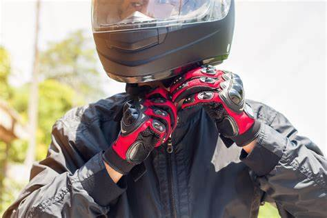

Equipamiento de Seguridad:
Es esencial usar equipo de seguridad al andar en motocicleta
que incluye casco, guantes, chaqueta y pantalones de protección, botas y gafas protectoras.

definicion
Historia
Pagina Principal